Глоссарий основных терминов UX/UI
Дизайнер интерфейсов
Дизайнер интерфейсов - человек, который отвечает за создание удобного, понятного
и вызывающего у пользователя положительные эмоции интерфейса
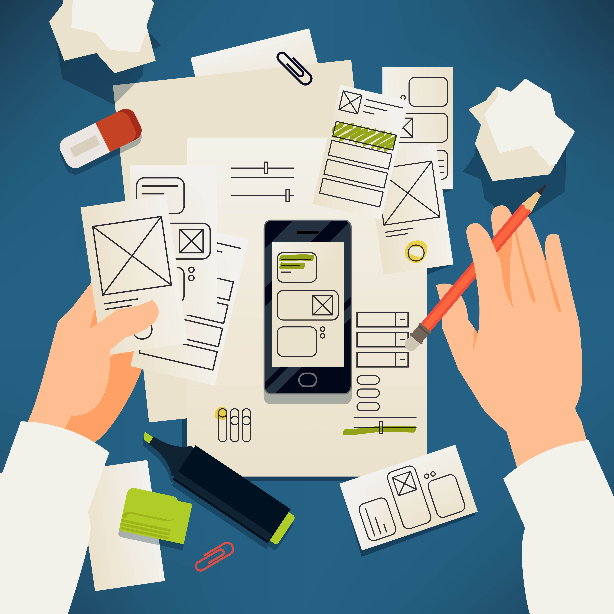
UX-дизайн
UX-дизайн (User Experience - «пользовательский опыт») отвечает за то, как интерфейс работает
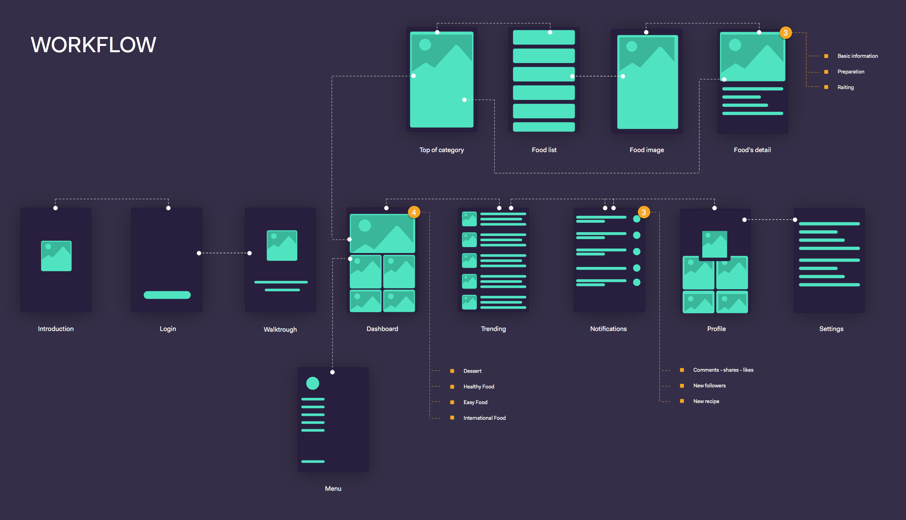
UI-дизайн
UI-дизайн (User Interface - «пользовательский интерфейс») отвечает за то, как интерфейс выглядит
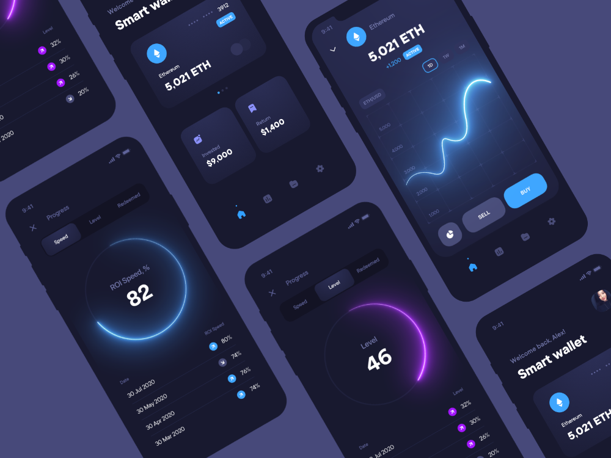
Целевое действие
Целевое действие - ключевое действие пользователя, ради которого создавался ресурс.
Дизайн-мышление
Дизайн-мышление - метод и процесс решения конкретных задач, который помогает понять пользователя, осмыслить его проблему и найти альтернативные решения
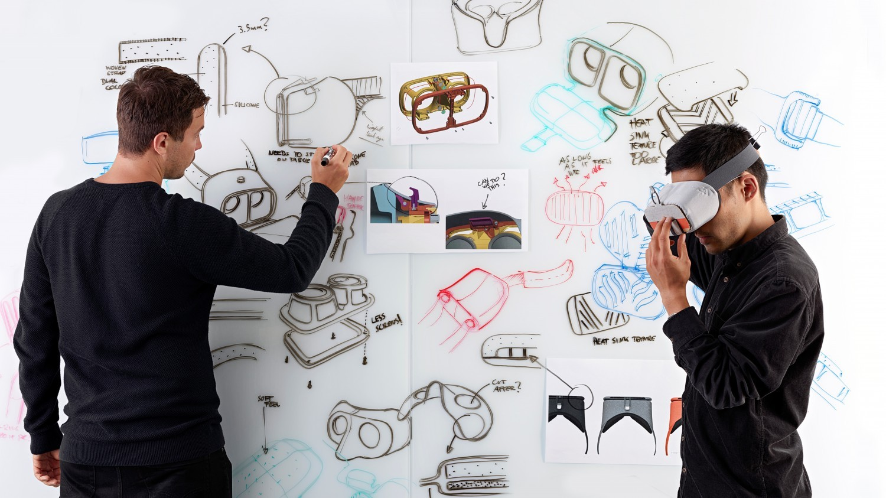
Ориентация на пользователя. Главный принцип
Клиентоориентированность. Люди, а не технологии, являются движущими силами инноваций, поэтому часть процесса заключается в том,
чтобы встать на место пользователя и почувствовать его потребности
Employee journey map
EJM — это карта путешествия сотрудника. На ней изображают точки касания сотрудника с компанией: от момента первого знакомства с
брендом работодателя до отзывов после увольнения
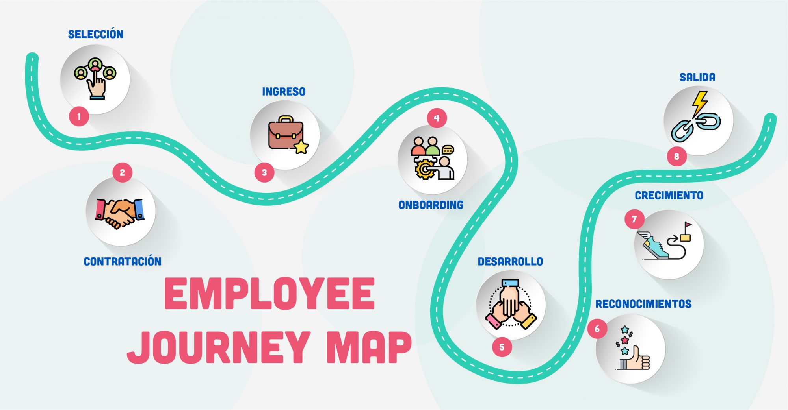
User Journey Map
UJM — это карта пути пользователя внутри продукта. То есть непосредственно того человека, который будет использовать продукт
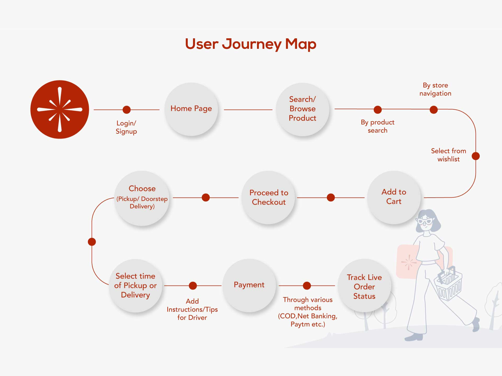
Мокап
Мокап (или mock-up на английском) — это специальным образом подготовленный файл, в котором можно свой дизайн размещать на реальных предметах
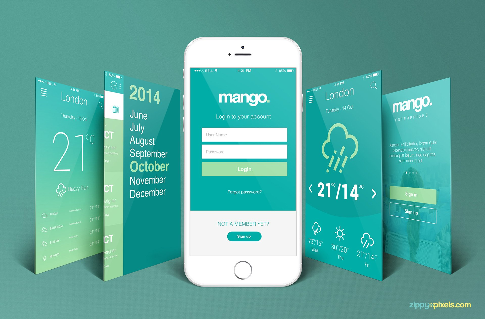
Вайрфрейм
Вайрфрейм (от англ. wireframe — каркас, сетка) — это схема с низким уровнем детализации, которая визуализирует структуру и содержание цифрового проекта.
Вайрфрейм показывает, как будут расположены все основные элементы продукта: навигация, карточки, текстовые блоки, иллюстрации и кнопки
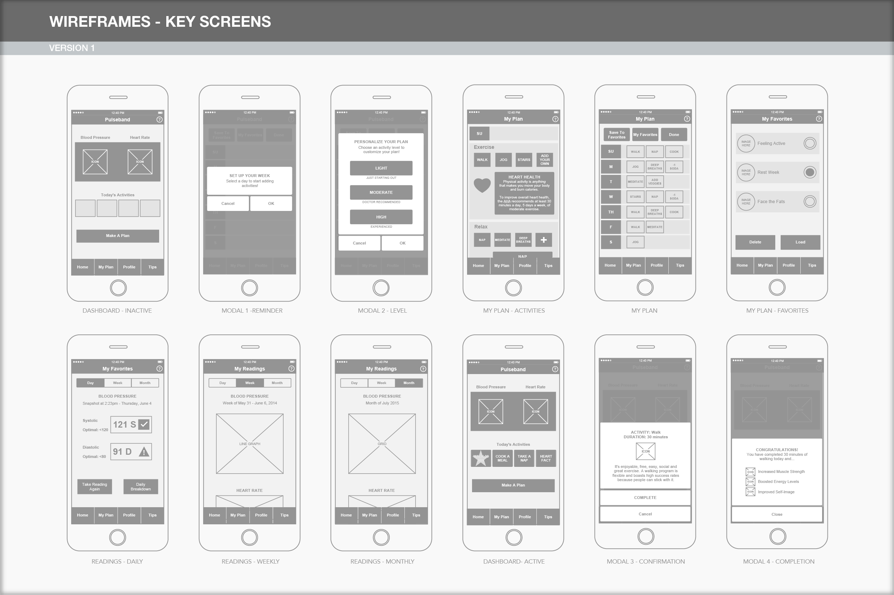
Скетч
Скетчи — это рисунки, которые выражают идеи и концепты с помощью визуальных образов, и прикладная функция в них главнее декоративной.
Важнее всего то, что быстрый рисунок выполняет определённую задачу: показывает концепт продукта, передаёт настроение сцены или помогает разобраться в технике
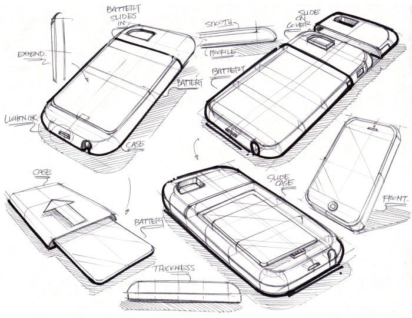
Task Analysis
Task Analysis — это изучение действий, которые выполняют пользователи чтобы достичь своей цели
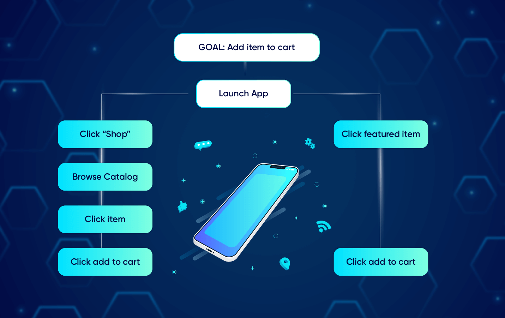
Эпик
Эпик - это большой объем работы или проекта, который обычно разбивается
на более мелкие задачи или итерации для управления и выполнения.
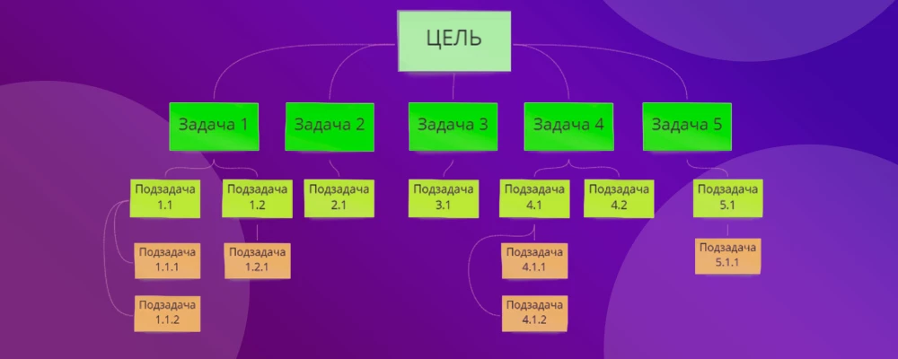
Юзер-стори (User Story)
Юзер стори - это короткое описание функциональности продукта,
написанное с точки зрения пользователя, чтобы лучше понимать его потребности.
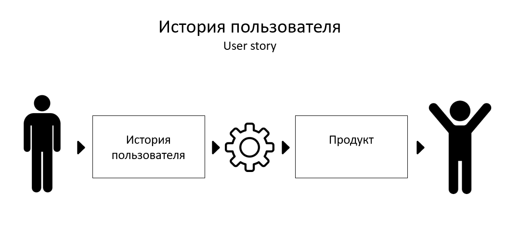